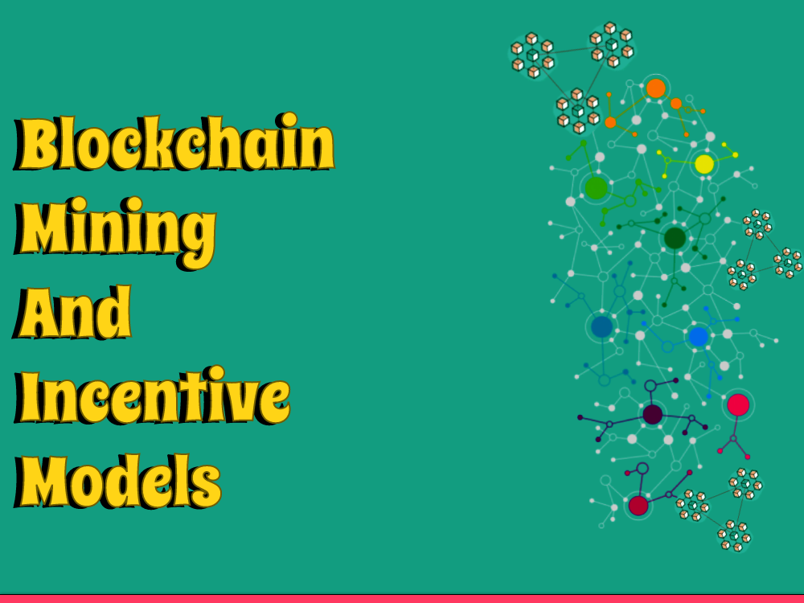
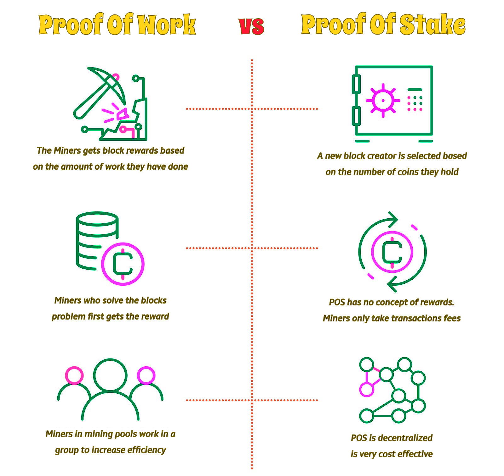
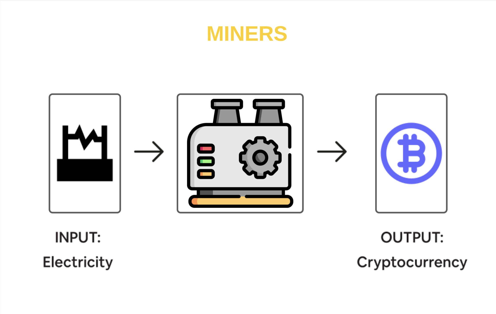

Blockchain innovation has reformed the manner in which we execute and collaborate with one another on the web. Its decentralized and appropriated nature guarantees the security and straightforwardness of exchanges. Be that as it may, keeping up with the trustworthiness of the blockchain requires a ton of computational power, which is where the most common way of mining and motivator models become possibly the most important factor.
Mining is a significant cycle in the realm of blockchain innovation. It includes checking and adding new exchanges to the blockchain, which guarantees the security and straightforwardness of the organization. Notwithstanding, mining requires a great deal of computational power, which can be costly and ecologically threatening. To resolve these issues, blockchain networks have embraced different motivation models that drive the mining system.
The most well-known motivating force model utilized in blockchain networks is the Proof-of-Work (PoW) model. In the PoW model, excavators contend to tackle complex numerical conditions, and the first to settle the condition is compensated with digital currency. This guarantees that main the most committed and talented diggers are compensated, and it assists with keeping up with the honesty of the blockchain. In any case, the PoW model has its disadvantages. It requires a ton of computational power, which can be costly and earth unpleasant.
To address the natural worries of the PoW model, some blockchain networks have taken on the Confirmation of-Stake (PoS) model. In the PoS model, diggers are compensated in view of how much cryptographic money they hold. This boosts diggers to clutch their digital money and keep up with the honesty of the blockchain. It likewise requires less computational power, which makes it all the more harmless to the ecosystem.
Another motivator model that is acquiring prevalence is the Appointed Proof-of-Stake (PoS) model. In the DPoS model, excavators are chosen in view of how much digital currency they hold, and they are liable for approving exchanges and adding them to the blockchain. This guarantees that main the most trusted and dependable diggers are compensated, and it assists with keeping up with the honesty of the blockchain.
There are additionally other impetus models like the Verification of-Authority (PoA) model, which is in many cases utilized in private blockchain networks. In the PoA model, hubs are chosen in light of their character and notoriety, as opposed to their computational power or digital currency property. This guarantees that main believed hubs are permitted to approve exchanges and add them to the blockchain.

What is Miners?
With regards to cryptographic money, an excavator is a member in the blockchain network who approves exchanges and makes new blocks by taking care of complicated numerical issues through a cycle called "mining." Mining includes involving strong PCs to perform serious computations to approve exchanges and add them to the blockchain record.
At the point when a digger effectively approves a block of exchanges, they get a compensation as shiny new cryptographic money, as well as any exchange charges related with the exchanges in the block. The demonstration of mining additionally assists with keeping up with the security and honesty of the blockchain network, as the computational work expected to approve exchanges makes it challenging for aggressors to alter the blockchain.
Different digital forms of money might utilize different mining calculations, like Confirmation of-Work (PoW) or Evidence of-Stake (PoS), which might affect the trouble and productivity of mining. Furthermore, the utilization of specific mining equipment and admittance to minimal expense power can be significant elements in deciding a digger's prosperity and productivity in the mining system.

Conclusion
Mining and impetus models are significant parts of blockchain innovation. They help to keep up with the security and honesty of the blockchain, and they boost excavators to try sincerely and keep up with the organization. While the PoW model is the most well-known, other motivator models like PoS, DPoS, and PoA are acquiring fame because of their ecological amicability and productivity. As blockchain innovation keeps on advancing, we can hope to see considerably more creative impetus models from now on.